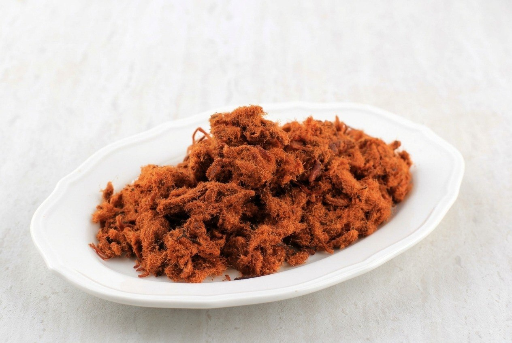
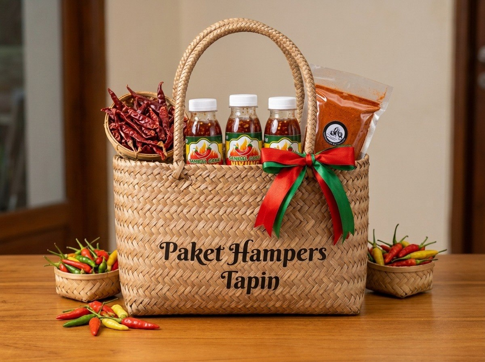

Cabai Hiyung Segar (250 gr)
Rp 25.000
Cabai rawit Hiyung petikan pagi dengan tingkat kepedasan 17 kali lipat cabai rawit biasa.
Pesan SekarangPusat olahan autentik cabai rawit terpedas khas Desa Hiyung, Kecamatan Tapin Tengah, Kabupaten Tapin, Kalimantan Selatan.
Pesan & Hubungi KamiDipetik langsung oleh petani Desa Hiyung dan diolah secara higienis.
Rp 25.000
Cabai rawit Hiyung petikan pagi dengan tingkat kepedasan 17 kali lipat cabai rawit biasa.
Pesan Sekarang
Rp 30.000
Taburan cabai kering sangrai dengan bumbu rempah khas Banjar, praktis untuk lauk harian.
Pesan Sekarang
Rp 35.000
Sambal siap saji olahan rumahan tanpa bahan pengawet buatan, pedas nendang dan gurih.
Pesan Sekarang
Rp 28.000
Dikeringkan secara alami sehingga tahan simpan hingga 6 bulan tanpa mengurangi rasa pedas.
Pesan Sekarang
Rp 22.000
Cabai hiyung kering yang dihaluskan menjadi bubuk siap tabur, cocok untuk bumbu masakan.
Pesan Sekarang
Rp 85.000
Berisi 1 Sambal Botol, 1 Abon Cabai, dan 1 Cabai Kering dalam kemasan kotak eksklusif.
Pesan Sekarang